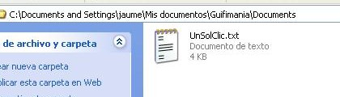
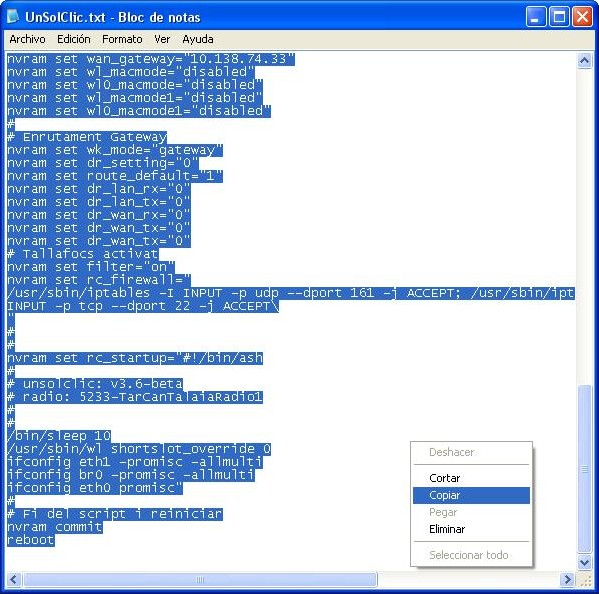
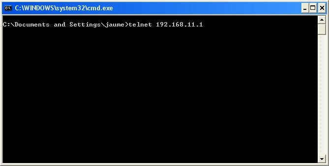
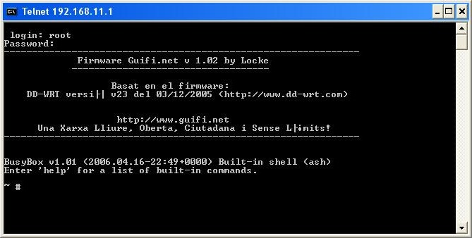
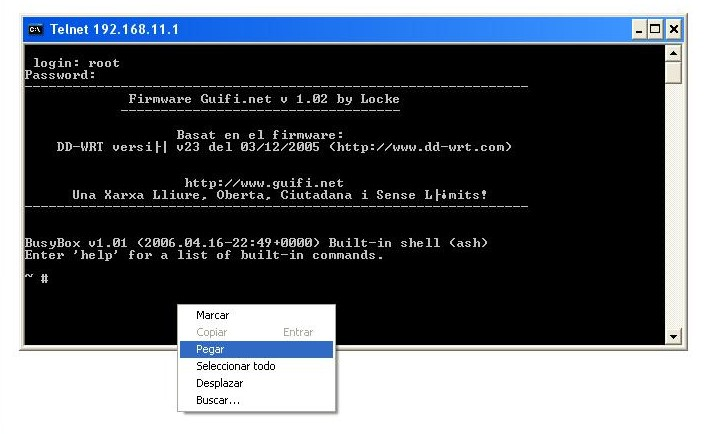
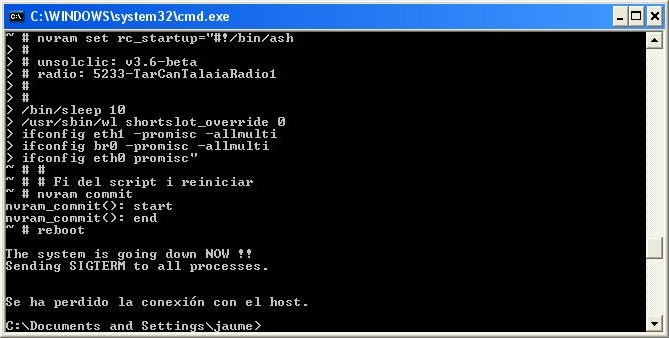
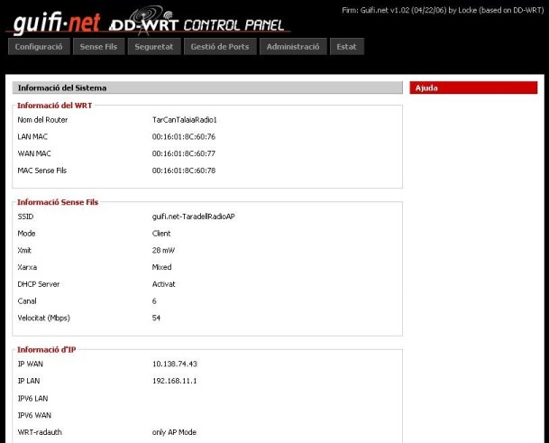
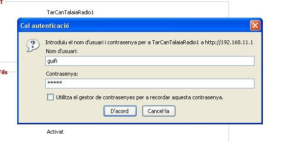

Configuració del router
Objectius
En aquest pas, configurarem el nostre router amb els paràmetres que hem
obtingut a Guifi.net per tal de conectar-nos al punt d'accés que anteriorment
hem sel·leccionat.
Per fer-ho utilitzarem l'unsolclic, que en el pas anterior hem guardat en un
arxiu de text.
Obrim l'arxiu que hem guardat anteriorment.

Seleccionem tot el contingut i ho copiem.

Obrim un terminal (inicio > Ejecutar... Escrivim CMD i premem Aceptar) i escrivim:
- telnet 192.168.11.1, en el cas que sigui un router Buffalo WHR-G54S
- telnet 192.168.1.1, en el cas que sigui un router Linksys WRT-54GL
En el nostre cas, es tracta d'un router Buffalo.

Ens demanarà un login i un password, els quals són els mateixos que els de la
web, root i admin consecutivament.

Ja estem connectats al router, el que hem de fer ara és enganxar el text de
l'unsolclic a la terminal.

Començaran a aparèixer tot de línies de comanda, les quals configuren el router
per deixar-lo apunt per connectar-se amb la xarxa de guifi.net.

Un cop ha acabat, si tornem a obrir el navegador web i entrem a 192.168.11.1 (en
el cas del Linksys 192.168.1.1) ens apareixerà un altre cop la pantalla d'inici,
però ara amb totes les dades configurades.

Si volem veure o modificar qualsevol paràmetre ens demanarà un nom d'usuari i
una contrasenya, aquestes ara són guifi com a nom d'usuari i guifi com a contrasenya.

Ja hem acabat!!! Ja tenim el nostre router Buffalo WHR-G54S o Linksys WRT-54GL
apunt per connectar-se a la xarxa de Guifi.net. Per probar que estem connectats
a la xarxa Guifi.net obrim el navegador i escrivim com a URL
"http://www.guifi.net". Si ens apareix la pàgina de Guifi.net voldrà dir que hem
realitzat correctament la connexió amb la xarxa. En cas contrari, si no la podem
veure, haurem de repassar tots els passos de la guia, ja que segurament ens hem
equivocat en algun lloc.
Què hem vist
En aquest fragment de la guia hem après a:
- Conectar-nos per telnet al nostre router
- Passar l'UnSolClic
- Deixar el nostre router configurat i probar la connexió amb la xarxa
Guifi.net.